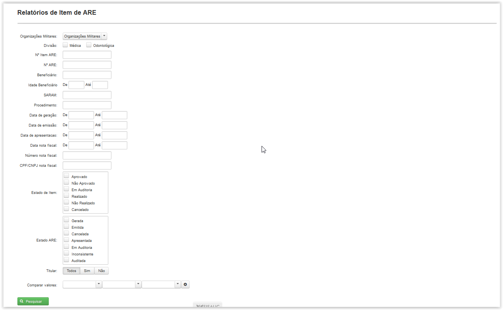

A tela é apresentada com vários filtros (não necessariamente deverão estar preenchidos ou selecionados) para pesquisa de itens de ARE.
Ao clicar no botão ( ) é gerada uma tabela para visualização. Você poderá escolher quais campos apareceram na tabela clicando em(
) é gerada uma tabela para visualização. Você poderá escolher quais campos apareceram na tabela clicando em( ).
).
Temos os seguintes filtros para pesquisa:
Organizações Militares: Escolha se quer incluir OM subordinadas.(Perfil de Diretor).
Divisão: Clique na opção desejada para o Tipo de Divisão.
N° Item ARE: Digite o número do item ARE.
N° ARE: Digite o número da ARE. Disponível para consulta na tela 'Acompanhamento/ARE'.
Beneficiário: Digite o nome do beneficiário.
Idade Beneficiário: Digite a idade do beneficiário.
SARAM: Digite o SARAM do beneficiário.
Procedimento: Digite o código do procedimento ou sua descrição.
Data de Geração: Escolha o período em que o Item ARE foi gerado.
Data de emissão: Escolha o período em que o Item ARE foi emitido.
Data de apresentação: Escolha o período em que o Item ARE foi apresentado.
Data nota fiscal: Escolha o período em que a nota fiscal foi emitida.
Número nota fiscal: Digite o número da nota fiscal.
CPF/CNPJ nota fiscal: Digite o CPF/CNPJ do prestador de serviço incluído na nota fiscal.
Estado de Item: Escolha o estado do Item de ARE (Aprovado, Não Aprovado, Em Auditoria, Realizado, Não Realizado ou Cancelado).
Estado ARE: Escolha o estado da ARE (Gerada, Emitida, Cancelada, Apresentada, Em Auditoria, Inconsistente ou Auditada).
Titular: Escolha somente a visualização de ARE geradas dos titulares ou dependentes.
Comparar valores: Digite uma faixa de valores.

Para adicionar ou remover as colunas exibidas nos resultados clique em( ) e marque ou desmarque as caixas com o nome da coluna.
) e marque ou desmarque as caixas com o nome da coluna.